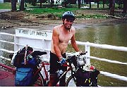

Bike Ride USA Journal
Day 59 Perryville to Danville to Berera. 45 miles. I stopped at the Danville college to do my journal and a teacher came in who saw my bike outside. We talked for about 45 minutes and then and Madison, invited me to lunch and meet another teacher who was traveling xcountry next year. Needless to say, with a full stomach I again got a late start and headed for Berera 35 miles away hoping to get there before dark. At camp I met Jack, on the Board of Directors for the Buckhorn Children's Center.| John and his son Nathan |
Day 61 Booneville to Hindman 55-60 miles. I stopped at the Buckhorn Center (since Jack form 2 days ago asked if I would) at 10 and stayed for 5 hours talking to the kids about my trip. First the boys dorm and then the girls dorm. I got a meal and great care package for the road from the boys center. *A counselor and a kid got into a fight in another part of the building, and in the girls, someone was from the center via phone was discussing some pretty heavey stuff. These kids go through more tough times in a week than I do in a lifetime Camped that night in Hindman. I asked the local Jailer (there were not cops in town) where to camp and the sent me behind some administrative buildings. The park was very will kept, had a stream going through it and water 100yds away. 2 people however did warn me of snakes in the area. There were a lot of them this year. I did not see any but the locals sure had me on my toes. I think they did that on purpose to scare me.
| Journey of Hope and Macho-Dude |
Day 63 85 miles. Elk horn to Domascus. I would have left earlier today but my back tire was again flat. I beat the Journey of Hope guys to the Hostel. I kicked their butts. The fact that they stopped for a few hours to sightsee means nothing. Right? On the way I had a cute blond ride up to me at a light and ask me were I was going. She then recommended a few places to eat and I asked her to join me................. you know me, you know the answer. I had dinner at Quincys with the Hopers and met a local musician named Tim. He mentioned the Fiddlers Festival in Galax. I also talked to a hitchhiker at the hostel who was going to the Festival. I decided a side trip was in order.
Day 64 55 miles Damascuss to Independence. I stayed in town to do laundry and get my biked tuned up. Left town about 2:00. The Journey of Hope left at 5 am to be somewhere by 2:00 80 miles away. That night I stayed in Bill's and Bet s yard at a private campground only 15 miles from Galax. It was getting dark and I heard that I may not find a place to stay in Galax.
Day 65 15 miles.I stayed a few extra hours and helped Bill pick up rocks and boulders in their yard. I had a great breakfast with them and went on my way to Galax for the Festival. Galax by 11:00 and found a parking lot/camping lot to camp. Drank a few beers with the parkers/campers next to me. I met up with Christian the Hitchhiker and hung with him throughout the festival. He had met Don and Karen the bikers from several days ago, and was planning to stay with them in Fredricksburg. The festival was okay but hanging with Christian made it a lot better.
Day 66 60 miles Galax to Christiansburg. An uneventful day ending only with eating and doing 10 postcards.
|  |
| Token Skin Shot |
Day 68 61 miles. Natural Bridge to Green Wood. I can smell the coast!!! I just missed the Cookie lady in Afton. She is a lady that has opened up her home to bikers. She was at a family reunion today and would not be back until 5. I figured that was gods way of saying go on. Due to the rain I have one heck of a case of road rash and really didn't feel like going on. I passed up a KOA due to price and spent that night at a church. (If I stayed at Afton I found out later I would have stayed with the Hopers).
Day 69 85 miles. Green Wood to Montpelier. The last big climb of the trip. a long 4 mile 9 to 12 % grade assent with no level areas.I took me a better part of and hour standing up and pumping at or near my granny gear. The hill led up to the Blue Ridge Parkway which I followed for 30 or so miles. I met several families along some of the Vista Points on the Parkway and came out of the stretch with a sandwich, a few sodas and a big chocolate chip cookie. It started raining a lot at the end of the ride and my road rash was really hurting so I stopped at Montpelier. I camped out behind the firehouse but not before the cops ran a police check on me.
Day 70 80 miles. Monteplier to Jamestown. I ran into the Journey of Hope again just as I got back on the TransAmerican trail. They stayed at Charles City and I headed to Jamestown. I could have gone on to Yorktown and completed the trip tonight but I hoped I would run into another biker so I would have someone else to finish the ride with. It rained while I was setting up my tent just soaking it and my stuff. The heavy rain came from one cloud and covered about a 1/4 mile area. Of course I was the area. Since I was soaked already, I walked clothes and all into the James River where the water was nearly as warm as the 80 whether.
| Back to Top |
|---|